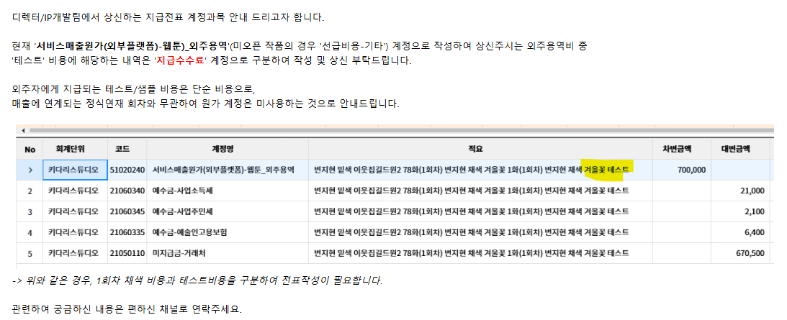
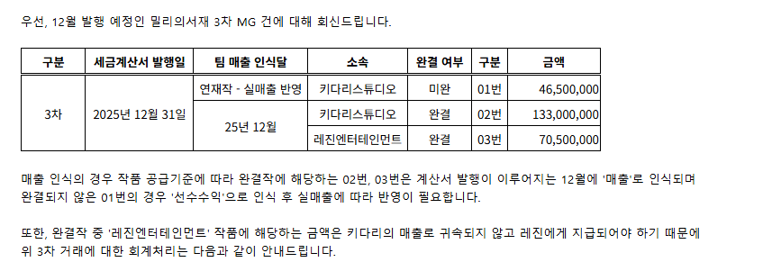
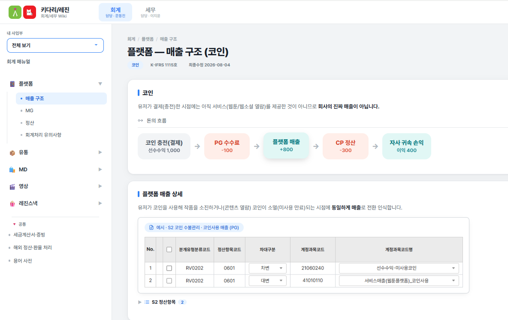
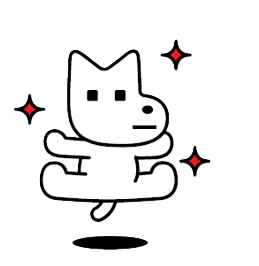

사업부 회계 이해도 제고 및 업무 효율화를 위한 실무 중심 웹 매뉴얼 개발
사업부는 거래 시점의 체감매출을 그대로 예상 손익으로 보고
→ 실제로는 회계 인식기준을 거친 인식매출만 손익에 반영되어 괴리 발생
표준 가이드 부재로 사업부마다 임의로 선택해 등록
→ 정산항목명 오등록으로 데이터 정합성 저하, 재작업 반복
거래구조 복잡성에 대한 이해 부족으로
잘못된 전표 작성 및 수정 요청 반복 발생
반복적인 단순 질의응답 대응으로
회계팀의 핵심 업무 집중 방해
D+5 기준으로만 쌓여도 회계팀 처리 역량을 초과하는 문의량
회계구분 오류만 23%(반려 150건 중 확정 반려 기준)


전체 회계기준을 모두 담지 않고, 사업부가 실제로 헷갈리는 핵심 항목 Top 5 중심으로 압축
매출인식 시점 등 사업부 체감상 혼란도가 높은 케이스를 매뉴얼 최상단에 우선 반영

별도 프로그램 설치 없이 브라우저를 통해 사내 직원 누구나 즉시 접근 가능
매출 유형별, 사업부별 가이드, 용어사전 탭 분류
검색 및 필터 기능을 통해 모르는 회계 기준을 10초 내 확인
회계기준 판단 오류 사전 예방으로 반려 및 수정 재처리를 절감합니다.
반복 질의응답 최소화로 회계팀 업무 집중도를 향상시킵니다.
문의 1건당 10분, 월 20건 기준 연간 40시간 소모 절감 효과입니다.
회계팀을 거치지 않고도 사업부 스스로 판단 가능
회계팀 확인 대기시간이 사라지며 현업 의사결정 사이클 단축
외부 미팅에서 사업부가 직접 계약·매출 구조를 설명 가능
세무 매뉴얼 연동 완료 및 링크 통합 테스트 수행 (8월 말 배포 목표)
사업부 대상 회계 Wiki 활용 가이드 공유 및 신규 입사자 온보딩 필수 모듈로 등록
현업 FAQ 채널을 신설하여 자주 묻는 질문을 Wiki 매뉴얼에 지속 반영
회계기준·세법 변경사항을 정기적으로 반영하는 업데이트 주기 수립
회계팀의 언어가 아닌 타 사업부 실무자가 이해하기 쉬운 언어로 기준을 재정의하는 법을 배웠습니다.
일회성 안내에 그치지 않고 Google Apps Script 기반의 지속 가능한 시스템 구축 가치를 체득했습니다.
단순 과제 제출에 머무르지 않고 전사 업무 효율화(연 40시간 절감)에 실질적으로 기여할 수 있었습니다.
